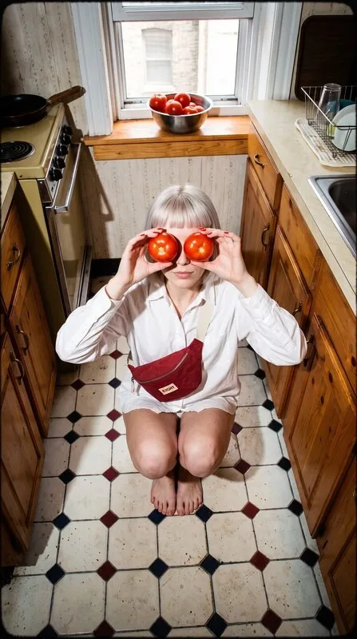
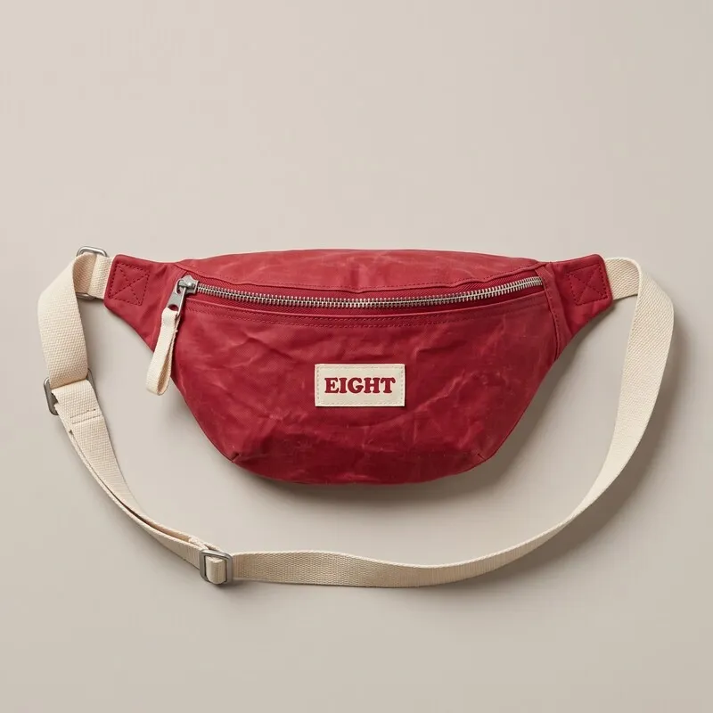
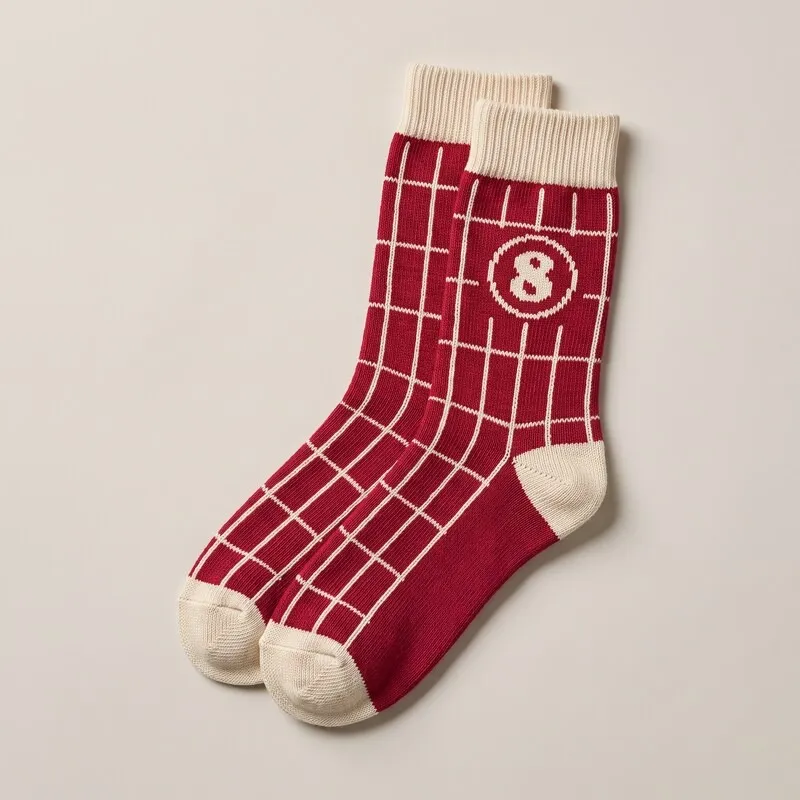
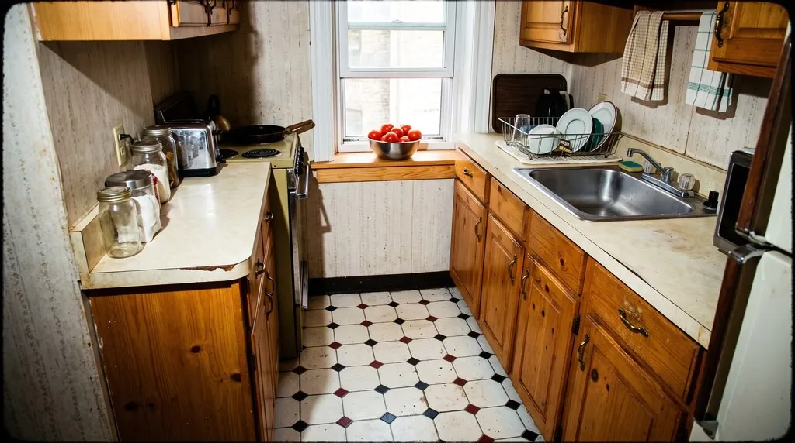

00:00:01:00Comercial · Marca y campaña de fotos
EIGHT
Una marca de streetwear que no existe, lanzada con una campaña de fotos que parece real. Identidad, producto, casting, escenarios y seis fotos de campaña, hechos como un único pipeline de IA.
- Categoría
- Marca y campaña de fotos
- Año
- 2026
- Cliente
- EIGHT (marca ficticia)
- Tipo
- Concepto
- Rol
- Dirección creativa, dirección de arte, pipeline de IA
- Herramientas
- Magnific Spaces, Google Nano Banana 2.1





01 / 06
Una marca ficticia, creada para mostrar el proceso completo: de un tablero en blanco a una campaña que podría salir mañana en Instagram.
Brief
EIGHT es una marca que inventé para mostrar cómo llevo una campaña: un pequeño sello de streetwear con tres accesorios —una gorra, una riñonera y unas medias— en rojo cereza y crema. El brief que me puse: lanzarla con una campaña de fotos que parezca hecha en 35 mm por un equipo real, con dos modelos que se repiten, interiores con vida y el logo legible en cada producto.
Desafío
Los modelos de imagen se desvían. Una cara cambia de una toma a otra, un logo sale mal escrito, el estampado de unas medias se convierte en otra cosa. Una campaña solo funciona si las mismas personas, los mismos productos y el mismo logo aparecen en cada foto.
La idea
Hacerlo como una sesión de fotos real. Primero el casting, después el producto, después los escenarios, y recién entonces las fotos — cada una generada a partir de esas referencias, nunca desde cero.
Proceso
- 01
Identidad
Logotipo en una serif suave y gruesa de los 70, un monograma con el 8 dentro de un círculo y una etiqueta tejida. Solo dos colores. El logo alimenta todos los packshots, así las letras son iguales en todas partes.
- 02
Producto
Packshots de catálogo de la gorra, la riñonera y las medias, sobre el mismo fondo gris cálido.
- 03
Casting
Fichas de personaje de Inti y Lía — frente, espalda, cara y los detalles que los hacen reconocibles (anillos, tatuaje, aro de cereza, uñas rojas).
- 04
Escenarios
Cuatro locaciones con un mismo look — un living setentero, una cocina, un baño rosa y una calle soleada. 35 mm, flash directo, sombras duras.
- 05
Fotos
Seis fotos en 4:5 y 9:16. Cada una toma un modelo, un producto y un escenario como referencia; el prompt solo dirige pose, encuadre y luz.
El tablero
Un tablero, cuatro etapas
Cada base tiene su descripción conectada a un generador. Para cambiar algo —un peinado, un color, una habitación— edito el texto, no la imagen, y todo lo que viene después se actualiza.
01 Identidad
02 Producto
 Gorra — Packshot
Gorra — Packshot
Riñonera — Packshot
Medias — Packshot03 Casting y escenarios
 Inti — Ficha
Inti — Ficha Lía — Ficha
Lía — Ficha Living — Escenario
Living — Escenario Calle — Escenario
Calle — Escenario04 Fotos
Foto 1 — LivingFoto 2 — Calle01 · Identidad y producto
Una marca en dos colores
Rojo cereza y crema, una serif suave de los 70 y un monograma que funciona al tamaño del tobillo de una media.
02 · Casting
Inti y Lía
Dos fichas de personaje hacen el trabajo de un casting. Todas las fotos las usan como referencia, y eso es lo que mantiene caras, pelo y detalles iguales en toda la campaña.
03 · Escenarios
Cuatro espacios, un mismo look
Primero los fondos vacíos, para que cada escenario exista antes de que alguien entre. Misma película, mismo flash, mismo tono cálido.


04 · Campaña
Las fotos
Cada foto combina un modelo, un producto y un escenario. El prompt solo dirige lo que dirigiría un fotógrafo —pose, encuadre, luz— y mantiene las poses un poco raras, a propósito.
Entregables
- Hoja de identidad — logotipo, monograma y etiqueta tejida
- 3 packshots de producto
- 2 fichas de personaje
- 4 fondos de escenario
- 6 fotos de campaña para feed (4:5) y stories (9:16)
- Un tablero de nodos reutilizable en Magnific Spaces — se edita una descripción y la cadena se regenera
Créditos
- Dirección creativa y pipeline de IA
- Lautaro Ferrandi
- Modelo de imagen
- Google Nano Banana 2.1 (vía Magnific)
Siguiente en Comercial3D / Contenido de marketing
PieLand Bakery →